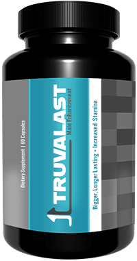

Je m'appelle Jean, je suis un parisien parmi tant d’autres. Je vais vous révéler 3 secrets qui résoudront tous vos PROBLÈMES DE SEXUALITÉ. Oui, vous avez bien lu. Peu importe que vous soyez une fille ou un mec, de toute façon c’est le mec et son pénis qui sont coupables des rapports médiocres. Et s’il y a un problème au niveau du pénis, le couple connaît des problèmes.
Mais revenons en aux secrets, je ne veux pas abuser de votre temps.
Faites-moi confiance et lisez jusqu'au bout. Si vous avez lu jusqu'ici, cela veut dire que vous aussi avez un problème d’ordre sexuel. Moi, je les avais aussi. Je peux énumérer tous les soucis auxquels j'ai été confronté.
Et ça a toujours été comme ça. Tous ces problèmes me hantaient depuis l'âge de 16 ans.
Au début, je ne savais pas que ce n'était pas normal, mais quand j'ai commencé à regarder du porno et à écouter les histoires de mes potes sur leurs premiers rapports sexuels, j'ai réalisé que mon cas était très différent du leur.
Peut-être que vous (ou votre petite amie) êtes dans une situation similaire. Moi, je sais une chose à coup sûr: cela cause un ÉNORME MANQUE DE CONFIANCE EN SOI.
Ma première expérience sexuelle a été terrible: à 17 ans, je sortais avec une fille vierge comme moi. Quand nous avons décidé de passer à l’acte, au début j'étais trop anxieux et je ne bandais pas du tout, et quand c'est enfin arrivé, je n'ai pas pu la faire femme parce que j'ai immédiatement fini en une flaque mouillée ... Elle était frustrée et j'avais très honte.
Et cette histoire se répétait presque à chaque fois lors des rapports. Je n'avais jamais pu satisfaire une femme. Il y avait même des situations où les filles se moquaient de mon petit pénis.
J'étais désespéré et j'ai renoncé à l'intimité. Complètement.
Mais la solution m'a trouvé. Et m'a aidé à me débarrasser de tous mes problèmes en 1 mois.
C'est le principal secret. Il existe un produit qui, en un mois, peut:
Un de mes potes travaille dans un centre médical à Los Angeles, et une fois par Facebook, il a envoyé un e-mail dans lequel il a invité les hommes à tester un nouveau produit. J'ai été très surpris car le produit était censé résoudre tous mes problèmes pour de bon. J’ai accepté sans hésiter, et 5 jours plus tard j’ai reçu une boîte avec les gélules de la marque Truvalast .
Imaginez ma surprise quand j'ai constaté d'excellents résultats une semaine plus tard. Difficile à le croire mais mon pénis a pris 6.5 cm, et j'ai commencé à me réveiller la nuit parce que je bandais grave!
Le mode d’emploi disait qu’il fallait l'utiliser pendant un mois, alors j'ai continué.
Ma bite est devenue énorme. Je n'en croyais pas mes yeux. J'ai envoyé des photos avant et après, comme mon ami me l'a demandé, et il a dit que le résultat était dans la moyenne et que 99% des participants au test y arrivaient.
Il a également dit qu'après cette expérience, tout le monde pourrait acheter Truvalast en ligne. C'est bien vrai. Au bas de cette page, vous pouvez laisser votre numéro de téléphone et vous recevrez un rappel pour vérifier si les remède magique sont toujours disponibles. Tout est complètement anonyme et sûr.
Le secret le plus simple. PROFITEZ-EN! Maintenant, vous n'avez plus à vous faire des soucis.
Moi, j'ai découvert des sites de rencontres qui proposent de sortir après une courte conversation, les filles viennent elles-mêmes chez moi et repartent toujours très heureuses.
J'ai eu environ 20 filles en six derniers mois. Et j'ai passé des nuits passionnées et inoubliables avec elles, ces filles gémissaient de plaisir. J'ai pris beaucoup de confiance, ce qui a même eu un effet positif sur mon travail. Récemment, j'ai eu une promotion, alors je me félicite!
Les gars et les filles, j'espère que mes conseils vous seront utiles et que vous n'aurez pas peur de commencer à changer votre vie pour le mieux!
Comme je vous l'ai promis, vous pouvez laisser votre numéro de téléphone ici et savoir si Truvalast est toujours disponible. Le stock s'épuise très rapidement. Dépêche-toi de récupérer ton exemplaire gratuit dès maintenant, avant la fin de la promotion.